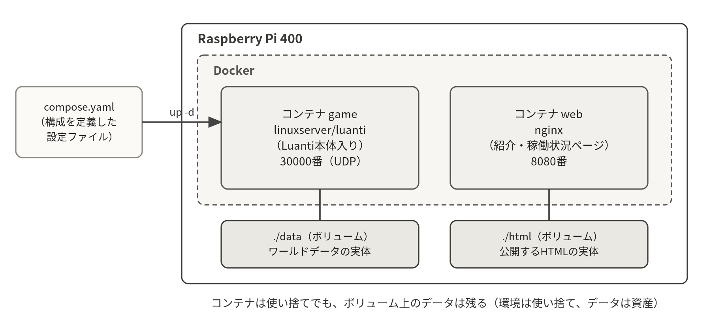

サーバをDockerコンテナとして再構築し、ワールドデータを引き継ぐ。さらにWebサーバを構築し、サーバの稼働状況を確認できるページを公開する。
タイムテーブル（180分）
| 時間 | 内容 |
|---|---|
| 30分 | ミニ講義：コンテナとは何か／なぜ実務でDockerが使われるか |
| 30分 | Dockerのインストールと基本コマンド |
| 40分 | Luantiサーバのコンテナ化とワールド移行 |
| 40分 | Webサーバ（nginx）と稼働状況ページの公開 |
| 30分 | 総合演習：資産からの完全再構築 |
| 10分 | 確認項目の達成チェック・最終課題の説明 |
この回の流れ
- コンテナの考え方をつかむ30分／座学
- Dockerを入れる30分／入れたら再ログイン
- Luantiをコンテナ化する40分／旧サービスは先に停止
- ワールドと設定を移す第4回のバックアップから
- Web監視ページを公開する40分／nginx＋cron
- 資産から完全再構築する30分／所要時間を計る
- 確認項目と最終課題の説明10分
5-1コンテナとは
第2回を思い出してほしい。パッケージを入れ、ワールドを生成し、設定を書き、ユニットファイルを書き……と1時間かけて構築した。もしサーバが10台あったら？ OSを入れ直すことになったら？ 同じ作業を毎回繰り返すのは現実的でない。
この問題を解決するのがコンテナである。アプリケーションと、その動作に必要な環境一式（ライブラリ、設定、手順）を「イメージ」としてパッケージ化し、どこでも同じように動かせる。コンテナを動かす代表的なソフトウェアがDockerであり、現在のサーバ運用（クラウドを含む）の標準技術になっている。仮想マシンと違いOSを丸ごと複製しないため、Raspberry Piでも軽快に動く（仮想マシンとの違いの背景は第10章 10.1、Dockerの用語は10.2）。
本回のゴールは次のとおりである：第2回で1時間かけた構築を、設定ファイル1枚と1コマンドで再現する。ただしワールドデータは第4回のバックアップから引き継ぐ。「環境は使い捨て、データは資産」、これがコンテナを用いた運用の基本的な考え方である。
5-2Dockerのインストールと基本操作
いま何をするか：公式スクリプトでDocker本体を入れ、自分のユーザをdockerグループに入れてから、hello-worldで動作を確かめる。
curl -fsSL https://get.docker.com | sh # 公式スクリプトでインストール
sudo usermod -aG docker $USER # sudoなしでdockerを使えるようにする
exit # 一度ログアウトして入り直す（グループ反映）
docker run hello-world # 動作確認
Hello from Docker! ... # ←これが出ればOKhello-worldの出力をよく読むと、「イメージをダウンロード（pull）→コンテナを作成→実行」という流れが説明されている。基本コマンドを確認する。
なお、この手順には2つの「実務の注意」がある。curl | sh は取得したスクリプトを即実行する書き方であり、本来は中身を確認してから実行するのが安全な作法である（今回は公式の定番手順として利用する）。また、dockerグループへの追加は実質root相当の権限を与える操作である（本実習は自分専用の実習機なので許容している。背景は第10章 10.5）。
docker run hello-world で permission denied や「Cannot connect to the Docker daemon」と出るのは、グループへの追加はログインし直すまで反映されないためである。exit して接続し直すか、いま開いているシェルだけで試すなら newgrp docker を実行する。
もう一つ、古い記事にある docker-compose（ハイフン）は旧バージョンのコマンド名である。本実習で使うのは docker compose（スペース区切りのサブコマンド）であり、ハイフン版は入っていないので command not found になる。
| コマンド | 役割 |
|---|---|
docker ps（-a） | 実行中の（-a：停止中も含む）コンテナ一覧 |
docker images | 手元にあるイメージの一覧 |
docker logs コンテナ名 | コンテナのログを表示（-f：リアルタイム） |
docker exec -it コンテナ名 bash | 稼働中のコンテナの中に入る |
docker stop／start コンテナ名 | コンテナの停止／起動 |
docker rm コンテナ名 | コンテナの削除 |
sudoを付けずにdocker psが実行でき、エラーにならないdocker run hello-worldで「Hello from Docker!」が表示されたdocker compose versionがバージョンを表示する（ハイフン版ではないことの確認）
5-3Luantiサーバのコンテナ化
Luantiサーバのコンテナイメージとして、広く使われている lscr.io/linuxserver/luanti を使う（arm64＝Raspberry PiのCPUアーキテクチャに対応）。サーバ本体の導入と起動をすべてイメージが面倒みてくれる。複数のコンテナ構成はcompose.yamlという設定ファイルに記述し、docker composeコマンドで一括管理する。
まず、既存のサービス（systemd直起動版）を止めて、無効化する。
sudo systemctl stop luanti
sudo systemctl disable luantiこの2行を飛ばすと、あとでコンテナが起動できない。30000/udp を使えるのは1つのプロセスだけであり、第2回のサービスが動いたままだとコンテナ側がポートを確保できずに落ちる（docker compose logs に address already in use や bind の失敗が出る）。
stop はいま止めるだけ、disable は次の起動時に自動で立ち上がらないようにする設定である。disable を忘れると、再起動した瞬間に旧サービスが復活してコンテナとポートを奪い合う（背景は第6章 6-2）。
作業ディレクトリを作り、viでcompose.yamlを作成する。
mkdir ~/game && cd ~/game
vi compose.yamlいま何をするか：サーバの構成（使うイメージ、公開するポート、データの置き場所、再起動の方針）を1枚のファイルに書き下ろす。
services:
game:
image: lscr.io/linuxserver/luanti
environment:
PUID: "1000" # コンテナ内の実行ユーザID（自分のユーザに合わせる）
PGID: "1000"
TZ: Asia/Tokyo
CLI_ARGS: "--gameid minetest --worldname world"
ports:
- "30000:30000/udp" # ポートの公開（UDP）
volumes:
- ./data:/config/.minetest # データの保存先（ボリューム）
restart: unless-stopped # 自動再起動（systemdのRestart相当）重要なのはvolumesの行である。コンテナは削除すると中のデータも消えるため、残したいデータはコンテナの外（ここではホストの ./data）に置く。この対応付けをボリュームという。「環境は使い捨て、データは資産」を実現する仕組みである（背景は第10章 10.3）。
YAMLは書き方に厳しい。写し間違えやすいのは次の3点である。
- インデントは半角スペースだけで、タブは使えない。
viでタブを入れると起動時に yaml のエラーになる。階層は上の行より深く、同じ階層は必ず同じ桁にそろえる。 "30000:30000/udp"の/udpを落とすとTCPの30000番が開いてしまい、ポートは開いているように見えるのにクライアントから繋がらない。LuantiはUDPを使う（第7章 7-4）。- ボリュームの左側は
./dataのように./（またはフルパス）で書く。data:/config/.minetestと書くとホストのディレクトリではなく、Dockerが管理する別の場所に作られてしまい、~/game/dataを見てもファイルが増えない。
書き換えたあとは docker compose config で解釈結果を表示させると、思ったとおりに読めているか確認できる。それでもコンテナが起動しない、起動してもすぐ消えるというときは、docker ps -a で Exited になっていないかを見て、docker compose logs -f でログを読む（Ctrl+Cで表示を止めてもコンテナは動いたままである）。失敗の原因はログの最後の数行にほぼ書かれている（読み方は第10章 10.8）。
このイメージにはゲーム（Minetest Game）が含まれていないため、第2回でaptから導入したものをボリュームに配置する。これも「データは資産」の実践である。コピー元は第2回 2-2の対応表の「ゲームの場所」である。
ディレクトリ名は minetest_game だが、Luanti はこれを gameid「minetest」として認識する（第2回の luantiserver --gameid list でも minetest と表示された）ので、compose.yaml の --gameid は minetest のままでよい。
いま何をするか：ホスト側にあるゲーム本体を、ボリュームとして見える data/games にコピーして、コンテナから読めるようにする。
mkdir -p data/games
cp -r /usr/share/luanti/games/minetest_game data/games/
# 旧名パターンなら /usr/share/games/minetest/games/minetest_game（第2回の対応表）いま何をするか：compose.yaml のとおりにイメージを取得してコンテナを起動し、ログを流しながら立ち上がりを見届ける。
docker compose up -d # 起動（-d：バックグラウンド）
docker compose logs -f # 起動の様子を観察（listening が出るまで待つ）
docker ps # 稼働確認第2回の手順と比較してほしい。パッケージのインストールも、ユニットファイルも書いていない。すべてcompose.yamlの十数行に集約された。この設定ファイルさえあれば、明日別のマシンでも同じサーバを1コマンドで再現できる。
docker psに game のコンテナが Up と表示されているdocker compose logsの末尾に listening（待ち受け開始）の行が出ている- クライアントから
ホスト名.localの30000番に接続でき、新しいワールドに入れる
ワールドの移行
第4回のバックアップから、育てたワールドをコンテナ版に引き継ぐ。コンテナ版のワールド置き場は data/worlds/ である。
いま何をするか：コンテナを一旦止め、バックアップのワールドを data/worlds に展開し、所有者をコンテナの実行ユーザに合わせてから起動し直す。
docker compose down # 一旦停止
mkdir -p data/worlds
sudo tar xzf /home/luanti/backup/world_最新.tar.gz -C data/worlds
sudo chown -R 1000:1000 data/worlds # PUIDに合わせる
docker compose up -dクライアントから接続し、自分の建築物がコンテナ版サーバに引き継がれていることを確認しよう。
ワールドを置いたのにコンテナが読み書きできない、ログに Permission denied が出る、という失敗の原因はほぼ所有者（UID）のずれである。sudo tar で展開したファイルは元の所有者（第3回で作った luanti ユーザなど）のまま復元されるため、chown -R 1000:1000 で PUID／PGID に合わせる必要がある。
コンテナの中と外でユーザ名は共有されず、一致するのは数字のUIDだけである。自分のユーザが1000番かどうかは id -u で確かめられる。1000でなければ compose.yaml の PUID／PGID と chown の数字を自分の値にそろえること（所有者とパーミッションの背景は第5章 5-3）。
展開先も取り違えやすい。data/worlds/ の直下にワールドのディレクトリ（中に map.sqlite や world.mt がある）が来る形が正しい。ls data/worlds で階層が1段深くなっていないか確認しよう。
もう一つ、忘れてはならない資産がある。第2回 2-4に書いた設定ファイル luanti.conf である。管理者の判定（name）は「接続してきた名前が設定ファイルの name と一致するか」で毎回行われ、auth.sqlite には保存されない。
つまり設定ファイルを移さないと、コンテナ版では管理者が不在になり、空パスワード禁止（disallow_empty_password）などの設定も外れてしまう。このイメージは /config/.minetest/main-config/minetest.conf（ホスト側では data/main-config/minetest.conf）を設定ファイルとして読むので、そこへ内容を写す。
いま何をするか：第2回で書いた設定の中身を、このイメージが読む場所（data/main-config/minetest.conf）に名前を変えて写し、所有者をそろえる。
docker compose down
mkdir -p data/main-config
sudo cp /home/luanti/server/luanti.conf data/main-config/minetest.conf
sudo chown -R 1000:1000 data/main-config
docker compose up -dクライアントから接続し直し、管理者の名前で /status などの管理コマンドが実行できること、motd が表示されることを確認しよう。「環境は使い捨て、データは資産」、ワールドだけでなく設定ファイルも資産である（設定とデータの構造は第11章 11.5）。
- クライアントから入ると、第4回までに育てた自分の建築物がそのまま残っている
ls -l data/worlds data/main-configの所有者がすべてPUIDと同じ数字（既定では1000）になっている- 管理者の名前で接続すると motd が表示され、
/statusなどの管理コマンドが通る
5-4Web監視ページの公開
運用しているサーバの状態を、チームの誰もがブラウザで見られるようにするのは実務の定番である。Webサーバ（nginx）のコンテナを追加し、サーバ紹介と稼働状況のページを公開する。compose.yamlに以下を追記しよう（servicesの下、gameと同じ深さにwebを並べる）。
いま何をするか：同じcompose.yamlにもう1つのサービスを足して、8080番でページを配るnginxを一緒に動かせるようにする。
web:
image: nginx:alpine
ports:
- "8080:80" # 8080番で公開
volumes:
- ./html:/usr/share/nginx/html:ro # 公開するファイル置き場（読み取り専用）
restart: unless-stopped
いま何をするか：公開するファイルの置き場を作ってページを書き、開けるポートをufwにも記録してから、追記したwebを起動する。
mkdir ~/game/html
vi ~/game/html/index.html # 自分のサーバの紹介ページを書く（内容は自由）
sudo ufw allow 8080/tcp # 開放ポートとして記録（下のNoteを参照）
docker compose up -d # 追記分だけが起動される※ 実は、Dockerが公開したポート（composeのports:）は、ufwの許可・拒否ルールを経由せずに外へ開かれる（Dockerがカーネルの転送ルールを直接操作するため）。つまり「ufwで閉じているから安全」はコンテナのポートには当てはまらない。公開するかどうかは ports: の書き方そのもので決まる。ここでufwにも登録するのは、開けているポートを一覧で管理・記録するためである（詳しくは補足資料7-5節）。
BYODのブラウザから http://ホスト名.local:8080 にアクセスし、自分のページが表示されることを確認する。近くの人のページも見に行ってみよう。
ページが出ないときは、切り分けを順に行う。docker ps で web のコンテナが Up か、ls ~/game/html にファイルがあるか、http:// を付けたか（https:// では繋がらない）、ポート番号 :8080 を書いたか、の4点である。
ufwを有効にしている場合、ホスト自身が待ち受けるポート（第2回で開けた22番など）は sudo ufw allow で明示的に許可しないと閉じたままである。ここで 8080/tcp を登録するのは、上のNoteのとおり開けているポートを自分で一覧管理するためでもある。sudo ufw status で記録されたか確かめておこう。
.local の名前で開けないときは、hostname -I で表示されるIPアドレスを使って http://192.168.…:8080 の形で試す（mDNSの背景は第7章 7-3）。
docker psに game と web の2つのコンテナが並んでいる- BYODのブラウザから
http://ホスト名.local:8080で自分のページが表示される sudo ufw statusの一覧に8080/tcpが載っている
稼働状況の自動更新（ミニ演習）
サーバの稼働状況を定期的にテキストファイルへ書き出せば、簡易的な監視ページになる。cron（第4回 4-3の復習）で毎分、コンテナの状態を書き出してみよう。
いま何をするか：自分のユーザのcronを開き、毎分docker compose psの結果をWebの公開ディレクトリに書き出す1行を登録する。
crontab -e # 自分のユーザのcronに次の1行を追記いま何をするか：~/game に移動してから結果を html/status.txt に書く、という2段構えの1行を書く。移動しないと相対パスが合わない。
* * * * * cd /home/ユーザ名/game && docker compose ps > html/status.txt 2>&1index.htmlに次のようにリンクを張れば、ブラウザから常に最新の状況を確認できる。
<a href="status.txt">サーバ稼働状況</a>リンクを押しても404になる、中身が古いままだ、という場合は書き出し先がnginxの公開ディレクトリになっているかを疑う。nginxが配るのは ~/game/html の中身だけなので、status.txt もそこに生まれていなければならない。ls -l ~/game/html/status.txt で、ファイルがあることと時刻が毎分更新されることを確かめる。
cronは自分のホームディレクトリから、しかも最小限の環境変数で実行される。cd を省くと html/status.txt はホーム直下に作られてしまい、docker が見つからないときは /usr/bin/docker のようにフルパスで書く。2>&1 はエラーも同じファイルに残すための指定で、失敗の原因がそのままページに出る（cronの背景は第8章 8-3）。
なお ./html はコンテナ側から読み取り専用（:ro）で渡しているが、書き込むのはホスト側のcronなので問題はない。
crontab -lに追記した1行が表示される- 1分ほど待つと
~/game/html/status.txtが作られ、docker compose psと同じ内容が入っている - ブラウザで紹介ページのリンクから稼働状況が開き、時刻が更新されていく
発展として、docker compose logs から「joins game」の行を抽出して「最近の入室者」を表示するのも面白い（監視の考え方は第8章 8-5。自由に工夫してみよう）。
5-5総合演習：資産からの完全再構築
5回分の総仕上げとして、「サーバは、設定ファイルとデータさえあれば何度でも作り直せる」ことを自分の手で証明する。構成資産（compose.yaml・html・設定ファイル・ワールドのバックアップ）だけを残して環境を完全に破棄し、ゼロから復元しよう。所要時間を計ること。
- ① 資産を退避する（最新ワールドと
compose.yaml・html・設定ファイルdata/main-configを tar で固める） - ② 環境を破棄する（コンテナの停止・削除 →
~/gameを削除。イメージ削除は任意） - ③ 資産から復元する（
~/gameを再作成 → 資産を展開 → ゲームデータの配置 → 所有者の調整） - ④ 1コマンドで一式を起動する
- ⑤ ワールドとWebページの復活を確認し、所要時間を実験記録に残す
※ 使うコマンドはすべて既出である：tar（第4回4-1）、chown -R 1000:1000（5-3）、docker compose down／up -d（5-2〜5-4）。この演習は「手順書なしでも資産から再現できる」ことの証明なので、まず自分の実験記録を見返そう。どうしても手が止まったら、その工程だけ教員・支援員にヒントをもらえばよい。
クライアントから接続してワールドが戻っていること、Webページが表示されることを確認し、破棄から復元完了までの所要時間を実験記録に残す。第2回に1時間かけた構築が数分で戻るはずである。これがInfrastructure as Code（補足資料第10章 10.4）の威力の実測値であり、最終課題ではこの記録の質も評価対象になる（6-5節の評価基準）。
~/gameを消したあと、資産を展開してdocker compose up -dだけで game と web が復活した- クライアントからワールドに入れ、建築物とWebページの両方が元どおりである
- 破棄から復元完了までの所要時間を実験記録に書いた
※ 余裕があれば、第4回の「壊して学ぶ」をコンテナ環境でも試してみよう。compose.yamlのportsの数字を変える、PUIDを別の値にする、などを仕込むと、docker compose logs での診断練習になる。
確認項目
達成したら日時・実行コマンド・結果を実験記録に残すこと。
docker compose up -dだけでサーバ一式（game＋web）が起動することを確認した- 第4回までに育てたワールドがコンテナ版に引き継がれている
http://ホスト名.local:8080で紹介ページと稼働状況が見られる- 資産からの完全再構築に成功し、所要時間を実験記録に残した
- 最終課題のテーマを決め、投稿先（Qiita・Zenn等）のアカウントを作成した（6-1、6-7節参照）
発展課題
- ContentDB（Luanti公式のコンテンツ配信サイト）から別のゲームやModを導入して、サーバの遊びを拡張してみよう。Androidスマホにも無料クライアントがあるので、スマホからの接続も試せる。
- Dockerfileを書いて、自分専用のカスタムイメージを作ってみよう。
docker statsでコンテナごとのリソース使用量を観察し、第3回の監視と比べてみよう。